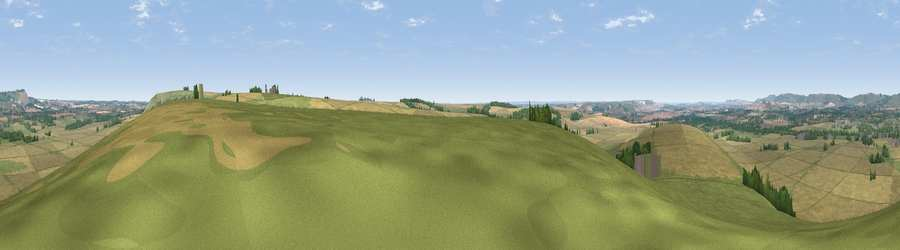

Viewpoint near Pewsey
#15108 in England · top 23% of its area beats it · near Pewsey · access?Where it is
The exact computed spot (SU 16825 57775). Click the marker for map links.
Public access: no public right of way or access land is recorded at this exact spot — it may be on private land. Computed from Natural England's CRoW access layer and OpenStreetMap rights of way — not the legal definitive map. Always verify locally.
The view, rendered

A 360° render of this exact spot computed from the terrain model, tree cover and land cover — summer colours, afternoon light, calibrated against photographs of famous viewpoints. Real trees, hedges and buildings will differ in detail.
The panorama
Grey silhouette: terrain skyline in each direction (720 bearings, Earth curvature and refraction included). Dashed green: skyline with trees (+15 m) and buildings (+8 m) as obstacles. Blue strip: how far the ground is visible on each bearing.
Where the view opens
Wedge length = distance to the farthest visible ground on that bearing (vegetation-aware). Rings at 10, 25 and 50 km.
What fills the view
58% cropland · 33% grassland · 8% woodland · 1% built-up
Angular shares of the visible panorama (visual magnitude), not map area. Landscape diversity 0.41 (0–1 Shannon).
Key numbers
More beautiful places nearby
The staircase of upgrades: each row has a higher view potential than everything closer. Driving times are estimates from straight-line distance, calibrated against real road routing — check an actual route before setting out.
| Place | Direction | Drive | Score |
|---|---|---|---|
| Viewpoint near Milton Lilbourne | ENE · 2 km | ~6 min | 62.7 |
| Easton Clump | ENE · 4 km | ~10 min | 64.0 |
| Giant's Grave | N · 6 km | ~12 min | 69.9 |
| Viewpoint near Oare | N · 6 km | ~12 min | 72.9 |
| Martinsell viewpoint | N · 6 km | ~13 min | 76.9 |
| Viewpoint near Berwick St John | SSW · 44 km | ~64 min | 78.2 |
| Viewpoint near Stinchcombe | NW · 59 km | ~81 min | 80.5 |
| Nottingham Hill | NNW · 73 km | ~97 min | 80.9 |
51.31884, -1.75996 · source: screening · position refined by local search. Computed location — check access rights before visiting.